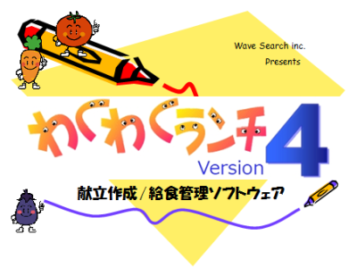

給食管理ソフト わくわくランチ バージョン４ 関東地区無料モニター園募集！
現在、岐阜県の３つの市で利用していただいている給食管理ソフト「わくわくランチ」。
バージョン４からバージョン５へのバージョンアップを計画するにあたり、新機能の追加やプログラムの改善にご意見いただける、無料モニター園（関東地区限定）を募集中です。
- まずは給食管理ソフトを体験してみたい
- 自園で望んでいる機能を、給食管理ソフトに導入して欲しい
- 自園のある自治体に提出できるぴったりな印刷が欲しい
- ゆくゆくは、iPadなどのタブレットのアプリによる給食管理を考えている
- とりあえずは無料で・・・
無料で給食管理ソフトをご提供します
現在、岐阜県の３つの市で利用していただいている給食管理ソフト「わくわくランチ」のバージョン４版を、2015年度いっぱい（2016年3月）まで無料でご提供します。
園様のご都合に合わせ、2015年1月ないしは2015年4月までに利用開始し、その年度末までご自由に利用していただけます。
アンケートおよびインタビュー調査にご協力ください
月に1回程度のアンケートと、数ヶ月に1回のインタビュー調査にご協力ください。インタビュー調査は年に6回程度を予定しており、弊社スタッフがモニター園様へご訪問しまして、給食ご担当者などへインタビューさせていただきます。
アンケートやインタビュー調査の結果をうけ、随時バージョンアップ
アンケートやインタビュー調査によるご要望や新機能などは、機能等を検討した上で随時バージョンアップしていきます。わくわくランチはインターネットによる自動バージョンアップ機能を搭載しているため、モニター利用している間にもバージョンアップされていきます。
- 募集期間
- 2014年12月いっぱいまで。応募に対しては順次ご連絡させていただきます。
- モニター期間
- 2015年1月 から 2016年3月
- 対象
- 関東地区（東京都、神奈川県、埼玉県、千葉県、栃木県、群馬県）内で自園による給食の調理を実施している、保育園、幼稚園、こども園。
- 募集園数
- 上限は設けておりませんが、インタビュー調査が可能な園数の範囲内で判断いたします。ご応募にお応えできなかった場合はご了承ください。
- 料金
- モニター園募集のため、費用は一切発生しません。
- キャンセルについて
- モニター園募集のため、費用は一切発生しません。
- システム動作環境
- Windows7もしくはWindows8が動作するデスクトップ/ノートパソコン
- ディスプレイ
- 1024×768以上の表示可能なディスプレイ
- その他
- 印刷物を出力するために、マイクロソフト社のExcel（エクセル）が必要です。
プログラムの自動バージョンアップのために、インターネット接続が必要です。

わくわくランチ バージョン４
現在、岐阜県の3つの市で利用いただいている献立作成/給食管理ソフト。
給食に出すお料理の登録、日々の献立メニューの作成、給食に必要な材料の発注書の作成、摂取栄養素や材料発注に関わる日報・月報・年報などの報告書の印刷が素早く行えます。
献立表は他のわくわくランチへ出力、取り込みすることができ、栄養士様等による複数園の献立メニューの一括管理にも適しています。
現在はバージョン４が最新版ですが、2015-16年をメドにバージョン５にバージョンアップ予定です。その際に、従来通りのWindows版のほか、iPadやAndroidタブレットのアプリのバージョンの開発も計画されており、軽量なタブレットでの利用も可能になる予定です。
- まずは給食管理ソフトを体験してみたいという場合には、このモニター園募集がチャンスです。
- こんな機能があったら・・・そんな意見をお持ちの園様は是非ご提案ください。
- 印刷帳票や必要監査書類等は自治体によって違います。印刷はExcelで行うので、柔軟なレイアウトが可能です。
- 現在、iPadなどのタブレットアプリのバージョンの開発も検討中です。
- 会社情報
- ウェーブサーチ株式会社
Wave Search Inc. - 所在地
- 〒150-0002
東京都渋谷区渋谷3丁目5番16号
渋谷三丁目スクエアビル2階 - 事業内容
- 研修・教育事業
ITソリューション事業
アウトドア事業 - お問い合せ
- メール：info@wave-search.jp
Tel：03-6860-4173
Fax：03-6730-1564
詳しくは弊社ページ （http://www.wave-search.jp/）をご覧ください。